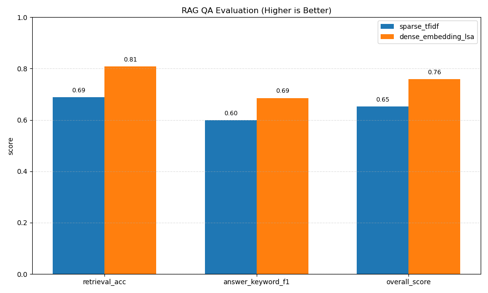

이 문서는 실험 설정/지표/결과 해석을 다룹니다. 모델 구조와 핵심 개념은 개념 설명 문서를 참고하세요.
RAG에서 문서 검색 모듈을 바꿨을 때(희소 검색 vs 임베딩 검색) 근거 문서 검색 정확도와 답변 품질이 어떻게 바뀌는지 검증합니다.
squad_validation_subset_docs239_qa250all-MiniLM-L6-v2) + FAISS(IndexFlatIP)FAISS는 벡터 유사도 검색 라이브러리입니다. 문서 임베딩을 인덱스로 저장하고 질의 임베딩의 최근접 이웃(top-k)을 빠르게 찾습니다. 문서 수가 커질수록 단순 브루트포스 대비 검색 지연(latency)을 줄이는 데 큰 이점이 있습니다.
0.6*retrieval_acc + 0.4*answer_keyword_f1| 방법 | retrieval_acc | answer_keyword_f1 | overall_score |
|---|---|---|---|
| baseline_tfidf | 0.688000 | 0.598667 | 0.652267 |
| st_miniLM_faiss | 0.808000 | 0.685333 | 0.758933 |
score_gain_vs_baseline: +0.106667

해석: FAISS+임베딩 방식이 검색 정확도와 답변 키워드 충족률 모두에서 baseline을 앞섰습니다. 특히 retrieval 단계에서 상승폭이 커서 최종 점수 개선으로 연결되었습니다.
예시 1
질문: How does the secondary theory say most cpDNA is structured?
Top-k: 1:d1(0.6158) | 2:d172(0.3312) | 3:d13(0.3283)
출력: ... most cpDNA is actually linear ...
근거 hit: True
예시 2
질문: What is the name of the two-tentacled cydippid ... ?
Top-k: 1:d2(0.4472) | 2:d183(0.3954) | 3:d13(0.3730)
근거 hit: True